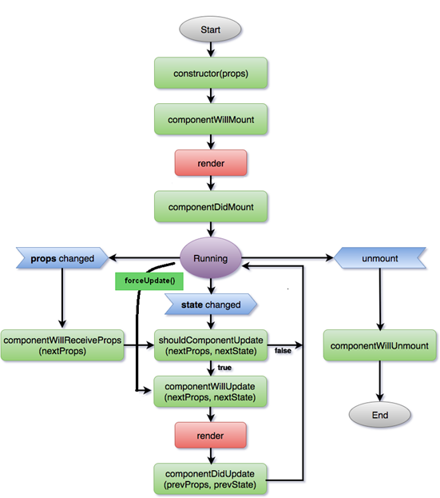

主要介绍React基础：包括React元素、React组件、React数据流、表单、列表等内容
React官方文档
React基础
React元素
createElement
1 | const element = ( |
Babel转译器把JSX转换成:1
2
3
4
5const element = React.createElement(
"h1",
{className:"greeting"},
"Hello, world!"
)
createElement会返回一个类似于下面的对象1
2
3
4
5
6
7const element = {
type: 'h1',
props: {
className: 'greeting',
children: 'Hello, world'
}
}
将React元素渲染到根DOM节点中,通常使用ReactDOM.render()1
2const element = <h1>Hello, world</h1>
ReactDOM.render(element, document.getElementById('root'))
ReactDOM的渲染只会更新渲染文本节点中发生变化的内容.
JSX 和 HTML 的区别
class
在JSX中不能使用class，因为是ES6的关键字，而使用classNamestyle 属性
style属性接受一个对象，而不是分号分割的字符串。CSS使用驼峰命名发1
2
3
4
5
6var styles = {
fontSize = '2em',
lineHeight: '1.6'
}
var em = <em style={styles}>JSX 中所有标签都需要闭合
用驼峰明明属性，像onClick
所有以data-与aria-开头的属性例外
子代
在包含开始和结束标签的JSX表达式中，标记之间的内容作为特殊的参数传递：props:children。
字符串
1
<MyComponent>Hello world!</MyComponent>
props.children就是字符串
JSX
你可以通过子代嵌入更多的 JSX 元素。1
2
3
4<MyContainer>
<MyFirstComponent />
<MySecondComponent />
</MyContainer>javascript表达式
- 函数
React组件
基础
组件可以将UI切分成一些独立的、可复用的部件，它可以接受任意的输入值(称之为”props”)，并返回一个在页面上显示的React元素
函数定义1
2
3function Welcome(props){
return <h1>Hello, {props.name}</h1>;
}
类定义1
2
3
4
5class Welcome extends React.Component {
render() {
return <h1> Hello, {this.props.name}</h1>;
}
}
React元素，除了是DOM标签，也可以是用户自定义的组件
const element =
而且一个组件可以包含其他组建作为React元素
由此可见，我们React其实是一种组合模式，组件与组件的组合是一致对待的。
而且定义组件像是定义一个类，而组为React元组时，就是实例化的过程（CreateElement）
生命周期

props与state
组件内部绝不能修改它自己的的props。props保存了由父元素传递进来的数据，这些数据不可以在props中进行修改。
state可以根据用户操作、网络响应、或其他状态变化，使组件动态的响应并改变组件的输出。
state其实就是保存组件内部的数据变化，在使用中，可以通过生命成员变量的方式来使用。
内部的状态一般就是通过用户的操作（action），以及网络请求来触发状态的变化。action操作时，需要注意响应函数的this问题，一般用箭头函数来避免直接bind。
1 | handleClick = () => { |
1 | handleClick(){ |
React组件间数据流
自顶向下数据流
React是一种自顶向下的数据传输,从父组件传递数据到子组件，因为从父组件传递给子组件的数据存放在props中，不能修改。
反向数据流
但为什么还有反向数据流呢？ 因为可以从父组件传递回调函数进去，子组件通过回调函数，将数据作为参数传递，而达到反向数据传输的目的。这样其实需要把数据的存储从子组件提升到父组件中去。这在React中称谓状态提升（因为react喜欢把数据放在state中）
1 | class TemperatureInput extends React.Component { |
一些技巧
map
用来遍历数组1
2
3
4
5
6
7
8
9const numbers = [1, 2, 3, 4, 5];
const listItems = numbers.map((number) =>
<li>{number}</li>
);
ReactDOM.render(
<ul>{listItems}</ul>,
document.getElementById('root')
);&&
false、null、undefined 和 true 都是有效的子代，但它们不会直接被渲染。1
2
3
4
5
6
7
8
9
10
11
12
13function Mailbox(props) {
const unreadMessages = props.unreadMessages;
return (
<div>
<h1>Hello!</h1>
{unreadMessages.length > 0 &&
<h2>
You have {unreadMessages.length} unread messages.
</h2>
}
</div>
);
}三目运算符
1
2
3
4
5
6
7
8
9
10
11
12render() {
const isLoggedIn = this.state.isLoggedIn;
return (
<div>
{isLoggedIn ? (
<LogoutButton onClick={this.handleLogoutClick} />
) : (
<LoginButton onClick={this.handleLoginClick} />
)}
</div>
);
}
列表
列表的key属性，在DOM中的某些元素增加或删除的时候帮助React识别哪些元素发生了变化，因此应当给数组中的每一元素赋予一个确定的标识。
1
2
3
4
5
6const numbers = [1,2,3,4,5]
const listItems = numbers.map((n) =>
<li key={n.toString()}>
n
</li>
);
元素的key只有在它和它的兄弟节点对比时才有意义,而且应该唯一。 比如上例中，将
1 | <ListItem key={n.toString()} value={n} /> |
表单
受控组件与非受控组件
在HTML中，像<input>、<textarea>和<select>这类的表单元素会自己维持自身的状态，并根据用户输入自动进行刷新，这在React中被称谓非受控组件。
但在React中，可变的状态通常都保存在足组件的state中，并只能通过setState()方法控制其更新。这就称谓受控组建。
受控组件
1
2
3
4
5
6
7
8
9
10
11
12
13
14
15
16
17
18
19
20
21
22
23
24
25
26
27
28
29
30class NameForm extends React.Component {
constructor(props) {
super(props);
this.state = {value: ''};
this.handleChange = this.handleChange.bind(this);
this.handleSubmit = this.handleSubmit.bind(this);
}
handleChange(event) {
this.setState({value: event.target.value});
}
handleSubmit(event) {
alert('A name was submitted: ' + this.state.value);
event.preventDefault();
}
render() {
return (
<form onSubmit={this.handleSubmit}>
<label>
Name:
<input type="text" value={this.state.value} onChange={this.handleChange} />
</label>
<input type="submit" value="Submit" />
</form>
);
}
}由于 value 属性是在我们的表单元素上设置的，因此显示的值将始终为 React数据源上this.state.value 的值。由于每次按键都会触发 handleChange 来更新当前React的state，所展示的值也会随着不同用户的输入而更新。
它可以对每次的输入进行检验,需要设置value属性来完成，并在每次的点击时使用onChange（）来进行处理，并在onChange()通过setState（）进行重新渲染。非受控组件
1
2
3
4
5
6
7
8
9
10
11
12
13
14
15
16
17
18
19
20
21class NameForm extends React.Component {
constructor(props) {
super(props);
this.handleSubmit = this.handleSubmit.bind(this);
handleSubmit(event) {
alert('A name was submitted: ' + this.input.value);
event.preventDefault();
render() {
return (
<form onSubmit={this.handleSubmit}>
<label>
Name:
<input type="text" ref={(input) => this.input = input} />
</label>
<input type="submit" value="Submit" />
</form>
);
}在 React 的生命周期中，表单元素上的 value 属性将会覆盖 DOM 中的值。使用非受控组件时，通常你希望 React 可以为其指定初始值，但不再控制后续更新。要解决这个问题，你可以指定一个 defaultValue 属性而不是 value。value值总是与文本框的最新内容保持一
ref
Refs 提供了一种方式，用于访问在 render 方法中创建的 DOM 节点或 React 元素。
通过ref将render中DOM节点或React元素进行指向。
当一个 ref 属性被传递给一个 render 函数中的元素时，可以使用 ref 中的 current 属性对节点的引用进行访问。
1 | class CustomTextInput extends React.Component { |
回调Refs：
不同于传递 createRef() 创建的 ref 属性，你会传递一个函数。这个函数接受 React 组件的实例或 HTML DOM 元素作为参数，以存储它们并使它们能被其他地方访问。
1 | class CustomTextInput extends React.Component { |
React理念
- 把UI划分出组件层级
- 用React创建一个静态版本
- 定义UI状态的最小且完整表示
- 确定State应该位于哪里
- 添加反向数据流